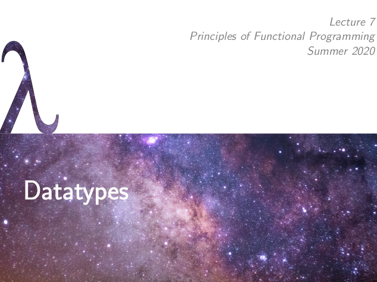
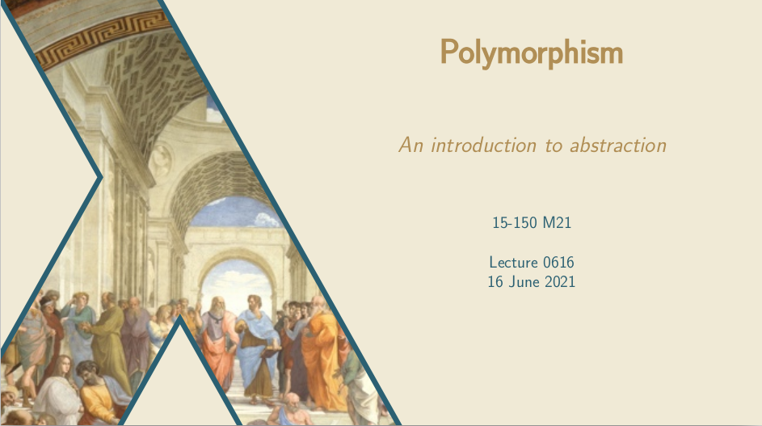
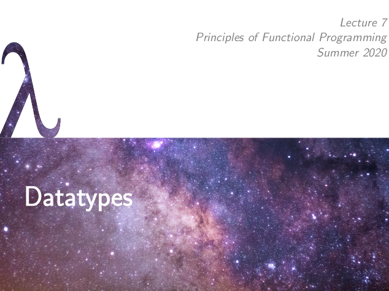
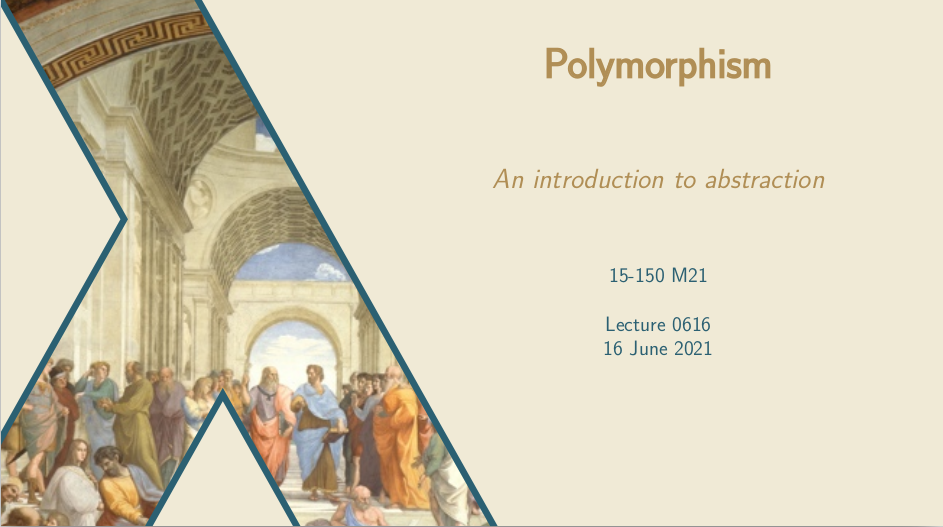

My Teaching
During my time as an undergraduate & graduate student, I have had many excellent opportunities to be involved in the education of my peers. As detailed below, this has put me in a diverse set of teaching circumstances: I've led exam reviews with 200+ students, and I've met with students one-on-one; I've designed homework problems, and I've helped students work through them; I've led activities about finding derivatives, and activities about finding the meaning of life.
My teaching approach aims to simultaneously engage students with the material and provide them the support they need to thrive. A student with sufficient motivation, encouragement, and structure can master any material; my goal is to provide such an environment. In all my work, I have striven to remove unnecessary barriers to students' learning, provide them a clear and useful structure towards attaining their educational goals, and give them a sense of the elegance and beauty of the subject matter (I have had the great pleasure of teaching some profoundly interesting topics).
Instructor
15-150 Principles of Functional Programming
Instructor (Summer 2020, Summer 2021)
Head Teaching Assistant (Spring 2018, Summer 2018, Fall 2018)
Teaching Assistant (Summer 2017, Fall 2017, Spring 2020)
15-150 Principles of Functional Programming is a core course in the CMU Computer Science curriculum, typically taken by first- and second-year undergraduates studying computer science, mathematics, and related fields. I served as a teaching assistant for this course six times, before teaching it as the primary instructor twice.

 



{kind=link}
{kind=link}
98-317 Hype for Types
Instructor (Fall 2019, Spring 2020)
Guest Lecturer (Spring 2019, Fall 2020, Spring 2021)
Hype for Types is a student-taught course ("stuco") at CMU which exists to provide students with an introduction to a variety of topics related to type theory, including advanced topics in programming language semantics and abstract mathematics.
As it stands, many of the most profound and interesting results in computer science and mathematical logic are only accessible to students after years of difficult study -- prerequisite after prerequisite must be taken in order to be able to understand deep results in full detail. With Hype for Types, we aim to present these amazing results without getting into the details, so that our students can understand (at least at a high level) what these topics are about -- without having to come in with a huge amout of background knowledge. For students who do ultimately want to study type theory at a higher level, Hype for Types provides a basic outline of topics currently being studied, so they know what fields in particular are worth pursuing.
Hype for Types was largely an outgrowth of the core CS course 15-150, and I got to know the original Hype for Types instructors (as well as my co-instructors) while we were teaching assistants for 15-150 together. I took Hype for Types myself as a student in Spring 2018, delivered a guest lecture in Spring 2019, and then joined the course as one of the primary instructors for the 2019-2020 academic year. Most of my lectures in the Spring 2020 semester were delivered remotely, due to the COVID-19 pandemic. I also returned to give guest mini-lectures in December 2020 and May 2021.
I delivered lectures on these topics:
- Dynamic Logic/Hoare Logic
- Introduction to Type Theory and the Simply-Typed Lambda Calculus
- Category Theory
- Cartesian Closed Categories
- Continuation Passing Style and the Yoneda Embedding
- Homotopy Type Theory
Lecture Slides, 08 October 2019 (Dynamic Logic)
Lecture Slides, 14 January 2020 (Intro to Type Theory)
Lecture Slides, 31 March 2020 (Category Theory)
Lecture Slides, 08 December 2020 (HoTT in 10 Minutes)
Lecture Slides, 04 May 2021 (HoTT in 10 Minutes)
{kind=link}
{kind=link}
Teaching Assistant
HoTTEST Summer School 2022
Teaching Assistant
The HoTTEST Summer School was a free online summer school covering the basics of homotopy type theory and formalization in Agda. The aim of the school was to offer an accessible introduction to these topics for a diverse audience and to promote inclusivity in the HoTT community. During the school, we had over two thousand users in our Discord channel, and many lectures were attended live by several hundred students. All of the lectures and problem solution sessions were recorded and are available on YouTube, and the materials are all available on the Github repository.
As a teaching assistant for the school, I held regular office hours to help students with the material. I was also involved with the creation/compilation of exercise worksheets (WS02, WS06, and WS12) and I led four exercise solution sessions (three are available on YouTube — click on the thumbnails to the right). I also created the LaTeX template for the worksheets, and designed the thumbnails used on the YouTube videos. As a side project, I also created an interactive schedule of all the lectures, problem sessions, and colloquia of the summer school.
Introduction to Formal Reasoning
Tutor/Grader (Autumn 2021, Autumn 2022, Autumn 2023)
Introduction to Formal Reasoning is a part of the Algorithms, Correctness, and Efficiency course at the University of Nottingham, a second-year undergraduate course in computer science. It is taught by Thorsten Altenkirch. In the IFR module, we use the proof assistant/programming language Lean to introduce students to the basic principles of constructive logic and computer-formalized proofs. As a tutor, I led two weekly tutorial sections where I reviewed lecture content and did example exercises. I also assisted students with their exercises in weekly lab sessions, and graded their finished work.
For the 2023 instance of IFR, I implemented an "auto-grader" to automatically grade student code quickly and without human errors. I estimate that this tool saved over one hundred hours of grading, allowing the tutors to focus their time on improving their teaching and better serving the students. The autograder was implemented using Lean's metaprogramming language, serving as an interesting logical-computational problem in its own right.
Functional Programming
Lab Assistant/Grader (Spring 2022, Spring 2023, Spring 2024)
Course Website
Functional Programming is a part of the Programming Paradigms course, which introduces the basic techniques of functional programming to first-year undergraduates. The course is taught by Graham Hutton, and uses the language Haskell. My responsibilities as a lab assistant consisted of helping students with their exercises in weekly lab sessions, and grading their work.
Languages and Computation
Tutor/Grader (Spring 2023, Spring 2024)
Languages and Computation is a second-year undergraduate course in computer science. It is taught by Thorsten Altenkirch. The module covers the theory of finite automata & regular languages, pushown automata & context-free languages, and computability using Turing machines. My responsibilities as Tutor include leading weekly tutorial sections, grading student work, and helping to write the accompanying lecture notes and exercises.
80-413/713 Category Theory
Teaching Assistant (Fall 2020)
Course Website
In the Fall 2020 term, I was recruited to serve as the teaching assistant/grader for CMU Philosophy's Category Theory course, taught by Mathieu Anel. The course serves both advanced undergraduate and graduate students, providing them a rigorous and fast-paced introduction to the standard core of category theory: categories, functors, natural transformations, (co)limits, adjunctions, and representability. We also strive to indicate the connection of these topics to active research topics, such as higher category theory/∞-category theory, geometry, algebra, philosophy, and the categorical semantics of logical theories (including type theory).
My role as teaching assistant is focused on developing the students' category theory communication skills: I grade all their submitted homework, and provide feedback on how to improve the rigor and clarity of their work. I also hold regular office hours (and individual meetings with students) to help them grasp concepts, solve problems, and effectively use the language of category theory to express their understanding. As part of this role, I also produce and release highly-detailed worked solutions (see below) to select problems from their homework; this allows me to demonstrate useful problem-solving techniques, and also provides an opportunity for commentary about writing effective category-theoretic proofs.
- Homework 4 Solution
- Homework 5 Solution
- Homework 6 Solution
- Homework 7 Solution
- Homework 8 Solution
- Homework 9 Solution
- Homework 10 Solution
I also had the opportunity to deliver two supplementary lectures for the course:
Special thanks to Mathieu Anel, Jonas Frey, and Steve Awodey for their suggestions to improve these lecture slides.{kind=link}
{kind=link}
{kind=link}
80-252 Kant
Teaching Assistant (Spring 2021)
80-252 Kant is a 'history of philosophy' course offered by the CMU Philosophy Department, taught by Kevin Kelly. The course begin with a detailed review of Kant's main predecessors (and some of the most significant voices in the history of Western philosophy): Plato, Aristotle, Descartes, Leibniz, Locke, and Hume. Along the way, we cover many of the classic questions of the Western philosophical tradition:
do we have souls? do they persist through death? how can we come to know anything for sure? are there truths which I am certain of beyond any possible doubt? are the objects I perceive in the world really there? do they have 'essential' properties that define them? can we know what those properties are? are space and time infinite? what does it mean to say that one event causes another? does God exist? is the entire future of the world already determined? do we have free will?
After establishing this important background, the course covers Kant's Prolegomena to Any Future Metaphysics, including the fine details of Kant's views concerning metaphysics, the analytic/synthetic and a priori/a posteriori distinctions, arithmetic, geometry, physics, epistemology, space, time, intuition, judgments, subjectivity vs. objectivity, concepts of the understanding, pure (syllogistic) logic, reason, the boundaries of human knowledge, noumena, and the antinomies of pure reason. We also briefly touched on his Groundwork for the Metaphysics of Morals, which discusses freedom and different kinds of imperatives, and lays out Kant's theory of ethics.
My role as a teaching assistant primarily consisted of grading students' responses to weekly homework assignments, and offering feedback on their understanding of the material. I also held weekly office hours to discuss the reading with students.
{kind=link}
80-310/610 Formal Logic
Teaching Assistant (Fall 2019, Fall 2020)
80-315/615 Modal Logic
Teaching Assistant (Spring 2020)
80-310/610 Formal Logic is one of the central courses in the graduate curriculum offered by the CMU Philosophy Department, and in the undergraduate Logic & Computation program. It provides an introduction to the core of classical mathematical logic: the syntax, semantics, proof calculus, soundness, and completeness of both propositional and first-order logic. 80-315/615 Modal Logic is a logic elective offered by the department, covering the basic core of (classical, propositional) modal logic, more sophisticated topics in its standard relational model theory, topological semantics, first-order modal logic, and the numerous connections to other topics in logic & philosophy.
I took both of these courses as an undergraduate, and had the opportunity to serve as the grader/teaching assistant for the 2019 and 2020 instances, all taught by my thesis advisor Adam Bjorndahl. As a TA, my main responsibilities were to grade student work and offer feedback, and to meet with students (both individually and in office hours) to help them with the problem sets & the material. The second half of the Spring 2020 semester and the entire Fall 2020 semester were conducted remotely.
80-310 Syllabus (F20)80-315 Syllabus (S20)
Some proof-writing tips I produced for 80-310/610 (F19)
A summary of some key ideas from 80-310/610 (F20)
{kind=link}
80-100 Intro to Philosophy
Teaching Assistant (Fall 2019)
As a graduate student in the philosophy department, I have the wonderful opportunity to serve as a teaching assistant for the department's Introduction to Philosophy course, taught by Simon Cullen, with assistance from Clark Glymour. Intro to Philosophy is designed to give students a broad introduction to issues of contemporary interest in philosophy, especially questions in applied ethics and metaphysics. The goal of the course is to significantly sharpen student's analytical reasoning skills, so, even if they ultimately aren't interested in philosophy itself, they will still receive tremendous benefit from having taken the course. The homework assigned to students requires them to construct "argument diagrams" (like the one pictured on the right), visually depicting a particular line of reasoning. Extracting these diagrams from (even sharply-written) philosophical prose is no easy task, so the course is designed to help students gradually develop this skill. However, once one has a diagram of a given argument, it becomes much easier to assess the strength of the argument, articulate its basic assumptions, and subject it to substantive critique.
My role as teaching assistant for this course consists of grading student work, holding office hours, meeting with students to help them in the course, and teaching two sections of a weekly recitation. I design my recitations to give students the opportunity to critically evaluate the arguments presented in lecture & assigned readings, discuss with their peers, and refine their own position on the philosophical issues. I adopt a collaboration-oriented approach which emphasizes student interaction and discussion, and minimizes instances of me "lecturing". We have lively debates in recitation, covering a wide variety of topics and viewpoints.
I also had the opportunity to deliver one lecture for this course: Lecture 26 on Alan Turing's "Computing Machinery and Intelligence".
Course Website